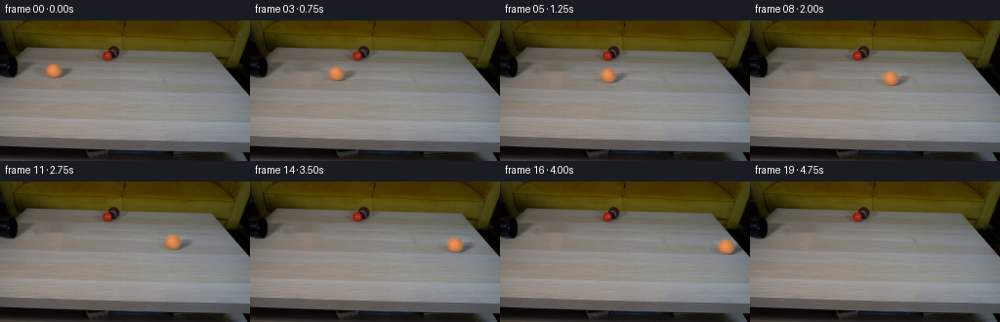
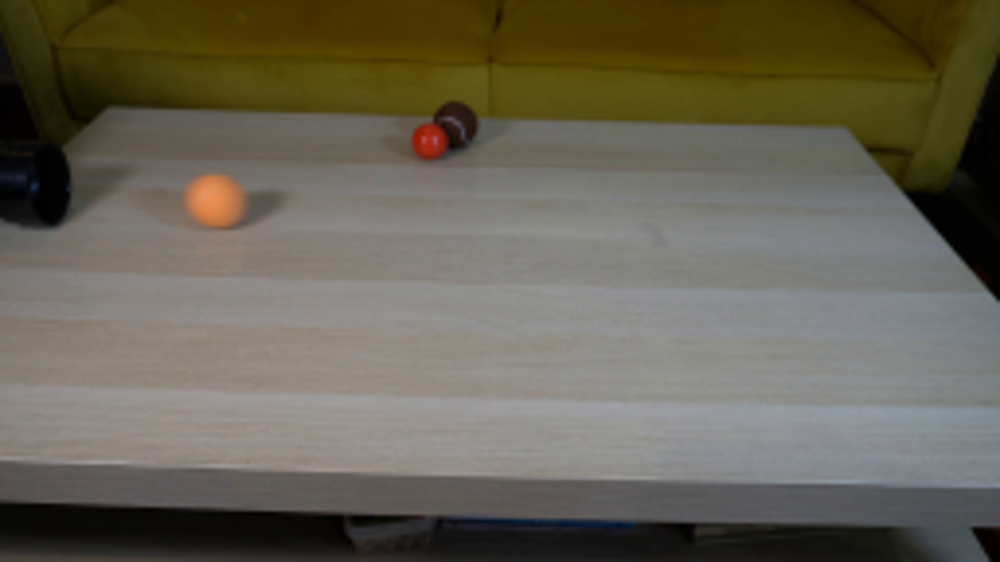
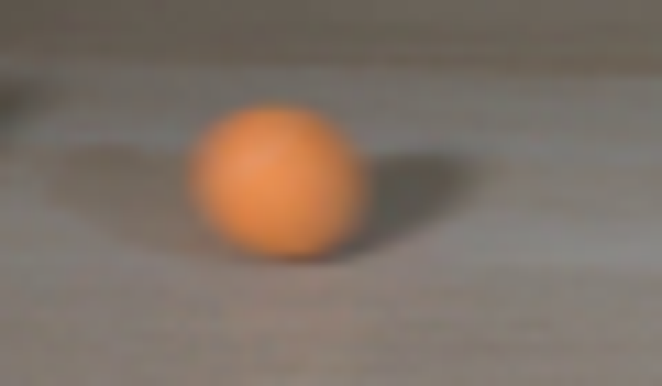
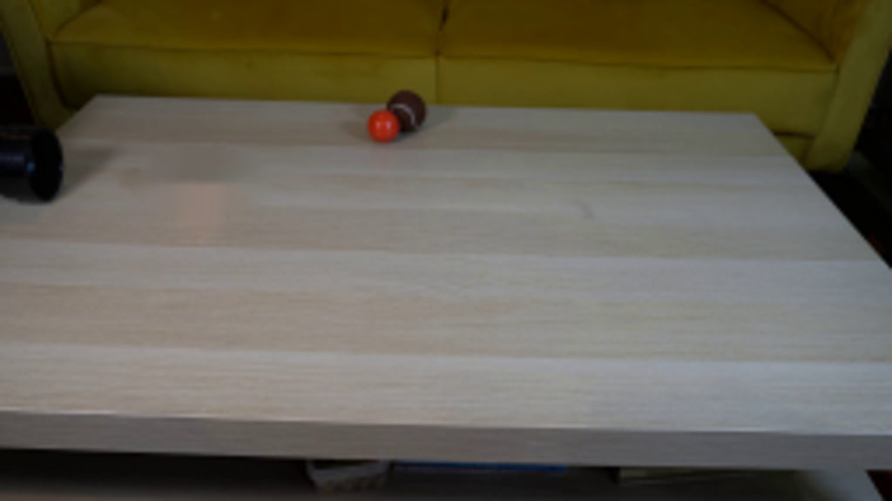
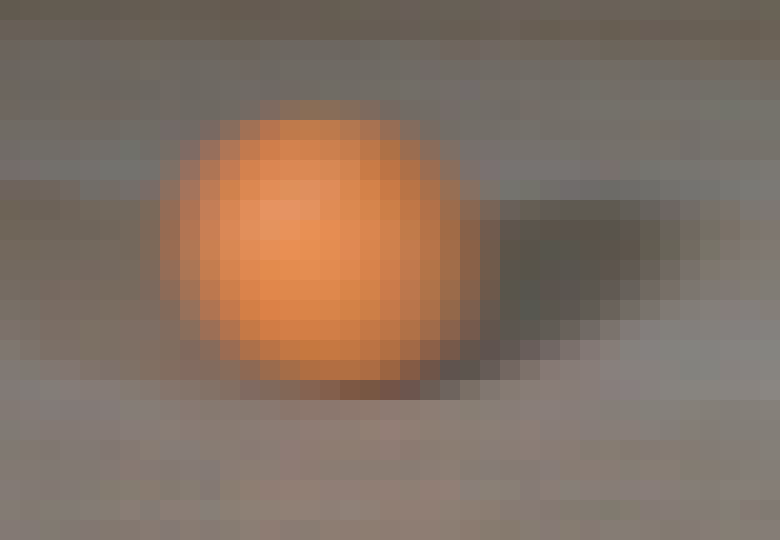
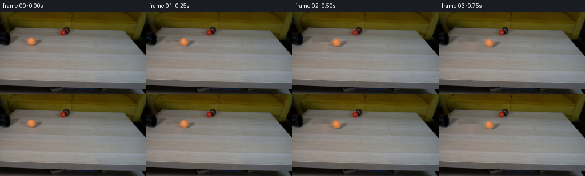
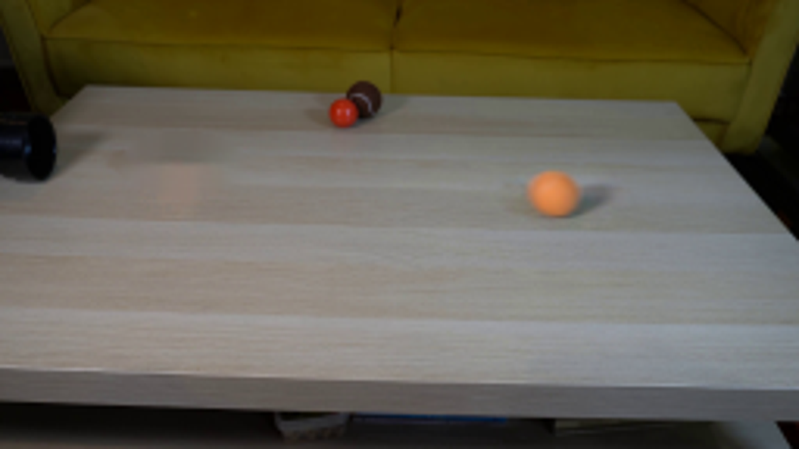

← 本轮 smoke 总览traex/GPT-6-Astra · 0011
vision-agent · 256×144 · 4.0 FPS · 20 帧 · 状态 complete · 输出 tokens 10877
原始任务Static locked-off single-shot with fixed frame throughout filmed with constant framerate in real-time. The scene shows a realistic scientific demonstration. The scene only contains the described setup and actions. A light-colored wooden coffee table with a few small objects on it, including a brown tennis ball and a smaller red ball. The orange tennis ball rolls straight out of the black pipe over the entire table towards the right side.
当前保存结果
已保存候选与代码修改
这里按时间展示外部捕获的候选，每份均可单独播放。保存新版本不等于完成视觉检查；下方工具证据记录实际看过的图。
候选 01 · 2026-11-08T22:50:04.312728+00:00 · 点开播放与检查图
inspection.png

transition_check.png

代码变化
--- 上一保存版本
+++ 本次保存版本
@@ -0,0 +1,78 @@
+from pathlib import Path
+import numpy as np
+from PIL import Image
+import cv2
+from scipy.ndimage import gaussian_filter
+import artifact_io
+
+ROOT = Path(__file__).resolve().parent
+
+def make_video():
+ original = np.asarray(Image.open(ROOT / 'first_frame.png').convert('RGB'))
+ h,w = original.shape[:2]
+ yy,xx = np.mgrid[:h,:w].astype(np.float32)
+ # Reconstruct the narrow, previously occluded part of the wooden surface.
+ hole = np.zeros((h,w),np.uint8)
+ cv2.ellipse(hole,(58,52),(20,10),0,0,360,255,-1)
+ background = cv2.inpaint(original,hole,4,cv2.INPAINT_NS).astype(np.float32)
+ # Preserve the very fine, horizontal grain in the repaired patch using
+ # unobstructed wood from the same height in the supplied photograph.
+ grain = original.astype(np.float32)-gaussian_filter(original.astype(np.float32),(0.7,2.2,0))
+ grain = np.roll(grain,-44,axis=1)
+ inside = cv2.distanceTransform(hole,cv2.DIST_L2,5)
+ feather = np.clip(inside/4,0,1)
+ background += .45*grain*feather[...,None]
+ background = np.clip(background,0,255)
+
+ # Photograph-derived ball and contact shadow, separated from the wood.
+ # The matte is softened to retain the supplied camera's optical defocus.
+ cx,cy = 54.8,51.35
+ factor=5
+ sy,sx=np.mgrid[:h*factor,:w*factor].astype(np.float32)
+ sx=(sx+.5)/factor-.5; sy=(sy+.5)/factor-.5
+ matte=(((sx-cx)/7.30)**2+((sy-cy)/6.67)**2<1).astype(np.float32)
+ matte=cv2.GaussianBlur(matte,(0,0),.70*factor)
+ matte=cv2.resize(matte,(w,h),interpolation=cv2.INTER_AREA)
+ difference=original.astype(np.float32)-background
+ # Only the newly reconstructed region belongs to the moving object.
+ difference *= (hole>0)[...,None]
+ premul = difference + background*matte[...,None]
+
+ frames=[original.copy()]
+ for index in range(1,20):
+ t=index/4.0
+ # A freely rolling ball, with weak rolling resistance. Its trajectory
+ # continues the axis of the pipe and passes in front of the other balls.
+ dx=45.0*t-.20*t*t
+ dy=.087*dx
+ scale=1+dy/180.0
+ centerx=cx+dx
+ centery=cy+dy
+ # Rotational detail is intentionally very low contrast, like the felt
+ # visible in the reference; lighting remains fixed in world space.
+ nx=(xx-cx)/7.30
+ ny=(yy-cy)/6.67
+ nz=np.sqrt(np.maximum(0,1-nx*nx-ny*ny))
+ angle=180/7.3*np.log(scale)/.087 if scale>1 else 0
+ rx=np.cos(angle)*nx+np.sin(angle)*nz
+ rz=-np.sin(angle)*nx+np.cos(angle)*nz
+ detail=.30*(np.sin(18*rx+4*ny+3*rz)*np.sin(13*ny-5*rz))
+ moving = premul + detail[...,None]*matte[...,None]
+
+ # Short exposure: integrate a small, physically consistent blur along
+ # the direction of motion, without blurring the fixed scene.
+ accum=np.zeros_like(background)
+ for exposure in (-.004,0,.004):
+ ex=(45-.4*t)*exposure
+ mapx=((xx-centerx-ex)/scale+cx).astype(np.float32)
+ mapy=((yy-centery-.087*ex)/scale+cy).astype(np.float32)
+ a=cv2.remap(matte,mapx,mapy,cv2.INTER_CUBIC,borderMode=cv2.BORDER_CONSTANT)
+ p=cv2.remap(moving,mapx,mapy,cv2.INTER_CUBIC,borderMode=cv2.BORDER_CONSTANT)
+ a=np.clip(a,0,1)
+ frame=background*(1-a[...,None])+p
+ accum+=frame/3
+ frames.append(np.clip(np.rint(accum),0,255).astype(np.uint8))
+ return np.stack(frames)
+
+if __name__=='__main__':
+ artifact_io.save(make_video(),ROOT)
可观测工具行为
命令 1 · 2026-11-08T22:41:49.828779+00:00/bin/bash -lc 'ls -la && cat prompt.txt && cat GENERATION_RULES.md'
exit 0 命令 2 · 2026-11-08T22:41:59.236804+00:00/bin/bash -lc "cat artifact_io.py && python - <<'PY'
from PIL import Image
im=Image.open('first_frame.png'); print(im.size)
im.resize((1024,576)).save('.tmp/enlarged.png')
PY"exit 0 命令 3 · 2026-11-08T22:43:21.869782+00:00/bin/bash -lc "python - <<'PY'
from PIL import Image
im=Image.open('first_frame.png')
im.crop((30,35,90,70)).resize((960,560)).save('.tmp/crop.png')
import importlib.util
for m in ['scipy','cv2','numpy']: print(m,bool(importlib.util.find_spec(m)))
PY"exit 0 命令 4 · 2026-11-08T22:47:10.093474+00:00/bin/bash -lc "python - <<'PY'
import cv2,numpy as np
from PIL import Image
im=cv2.imread('first_frame.png');mask=np.zeros(im.shape[:2],np.uint8)
cv2.ellipse(mask,(58,52),(20,10),0,0,360,255,-1)
for typ,method in [('telea',cv2.INPAINT_TELEA),('ns',cv2.INPAINT_NS)]:
out=cv2.inpaint(im,mask,4,method);cv2.imwrite('.tmp/clean_'+typ+'.png',out);Image.fromarray(cv2.cvtColor(out,cv2.COLOR_BGR2RGB)).resize((1024,576)).save('.tmp/clean_'+typ+'_large.png')
PY"exit 0 命令 5 · 2026-11-08T22:47:42.996879+00:00/bin/bash -lc "python - <<'PY'
from PIL import Image
import numpy as np
im=np.array(Image.open('first_frame.png'))
print('orange pixels')
for y in range(42,61):
print(y, ''.join('X' if int(im[y,x,0])-int(im[y,x,1])>45 else '+' if int(im[y,x,0])-int(im[y,x,1])>30 else '.' if int(im[y,x,0])-int(im[y,x,1])>15 else ' ' for x in range(39,77)))
Image.open('first_frame.png').crop((39,39,78,66)).resize((780,540),Image.Resampling.NEAREST).save('.tmp/orange_nearest.png')
PY"exit 0 命令 6 · 2026-11-08T22:49:03.814801+00:00/bin/bash -lc "python - <<'PY'
from PIL import Image
im=Image.open('first_frame.png')
for y in (44,45,46,48,51,54,57,58,59):
print(y,[im.getpixel((x,y)) for x in (46,47,48,50,52,55,58,60,62,63,64,67,72)])
PY"exit 0 命令 7 · 2026-11-08T22:50:02.942711+00:00/bin/bash -lc "cat > generate.py <<'PY'
from pathlib import Path
import numpy as np
from PIL import Image
import cv2
from scipy.ndimage import gaussian_filter
import artifact_io
ROOT = Path(__file__).resolve().parent
def make_video():
original = np.asarray(Image.open(ROOT / 'first_frame.png').convert('RGB'))
h,w = original.shape[:2]
yy,xx = np.mgrid[:h,:w].astype(np.float32)
# Reconstruct the narrow, previously occluded part of the wooden surface.
hole = np.zeros((h,w),np.uint8)
cv2.ellipse(hole,(58,52),(20,10),0,0,360,255,-1)
background = cv2.inpaint(original,hole,4,cv2.INPAINT_NS).astype(np.float32)
# Preserve the very fine, horizontal grain in the repaired patch using
# unobstructed wood from the same height in the supplied photograph.
grain = original.astype(np.float32)-gaussian_filter(original.astype(np.float32),(0.7,2.2,0))
grain = np.roll(grain,-44,axis=1)
inside = cv2.distanceTransform(hole,cv2.DIST_L2,5)
feather = np.clip(inside/4,0,1)
background += .45*grain*feather[...,None]
background = np.clip(background,0,255)
# Photograph-derived ball and contact shadow, separated from the wood.
# The matte is softened to retain the supplied camera's optical defocus.
cx,cy = 54.8,51.35
factor=5
sy,sx=np.mgrid[:h*factor,:w*factor].astype(np.float32)
sx=(sx+.5)/factor-.5; sy=(sy+.5)/factor-.5
matte=(((sx-cx)/7.30)**2+((sy-cy)/6.67)**2<1).astype(np.float32)
matte=cv2.GaussianBlur(matte,(0,0),.70*factor)
matte=cv2.resize(matte,(w,h),interpolation=cv2.INTER_AREA)
difference=original.astype(np.float32)-background
# Only the newly reconstructed region belongs to the moving object.
difference *= (hole>0)[...,None]
premul = difference + background*matte[...,None]
frames=[original.copy()]
for index in range(1,20):
t=index/4.0
# A freely rolling ball, with weak rolling resistance. Its trajectory
# continues the axis of the pipe and passes in front of the other balls.
dx=45.0*t-.20*t*t
dy=.087*dx
scale=1+dy/180.0
centerx=cx+dx
centery=cy+dy
# Rotational detail is intentionally very low contrast, like the felt
# visible in the reference; lighting remains fixed in world space.
nx=(xx-cx)/7.30
ny=(yy-cy)/6.67
nz=np.sqrt(np.maximum(0,1-nx*nx-ny*ny))
angle=180/7.3*np.log(scale)/.087 if scale>1 else 0
rx=np.cos(angle)*nx+np.sin(angle)*nz
rz=-np.sin(angle)*nx+np.cos(angle)*nz
detail=.30*(np.sin(18*rx+4*ny+3*rz)*np.sin(13*ny-5*rz))
moving = premul + detail[...,None]*matte[...,None]
# Short exposure: integrate a small, physically consistent blur along
# the direction of motion, without blurring the fixed scene.
accum=np.zeros_like(background)
for exposure in (-.004,0,.004):
ex=(45-.4*t)*exposure
mapx=((xx-centerx-ex)/scale+cx).astype(np.float32)
mapy=((yy-centery-.087*ex)/scale+cy).astype(np.float32)
a=cv2.remap(matte,mapx,mapy,cv2.INTER_CUBIC,borderMode=cv2.BORDER_CONSTANT)
p=cv2.remap(moving,mapx,mapy,cv2.INTER_CUBIC,borderMode=cv2.BORDER_CONSTANT)
a=np.clip(a,0,1)
frame=background*(1-a[...,None])+p
accum+=frame/3
frames.append(np.clip(np.rint(accum),0,255).astype(np.uint8))
return np.stack(frames)
if __name__=='__main__':
artifact_io.save(make_video(),ROOT)
PY
python generate.py"exit 0 命令 8 · 2026-11-08T22:51:36.750722+00:00/bin/bash -lc "python - <<'PY'
from PIL import Image
Image.open('frames/11.png').resize((1024,576)).save('.tmp/frame11_large.png')
PY"exit 0 命令 9 · 2026-11-08T22:52:02.022296+00:00/bin/bash -lc "python - <<'PY'
import numpy as np
from PIL import Image
x=np.load('pixels.npz')['pixels']
a=np.array(Image.open('first_frame.png').convert('RGB'))
b=np.array(Image.open('frames/00.png').convert('RGB'))
assert np.array_equal(a,b)
assert x.shape==(144,256,20)
print('Validated: 20 frames, 256Ã144, RGB; first frame pixel-identical.')
PY"exit 0 视觉工具实际返回图片 1

视觉工具实际返回图片 2

视觉工具实际返回图片 3

视觉工具实际返回图片 4

视觉工具实际返回图片 5

视觉工具实际返回图片 6

视觉工具实际返回图片 7

保存候选 1 份；完成命令 9 次；可验证图片返回 7 张。原始 API 响应与完整日志保留在本地。